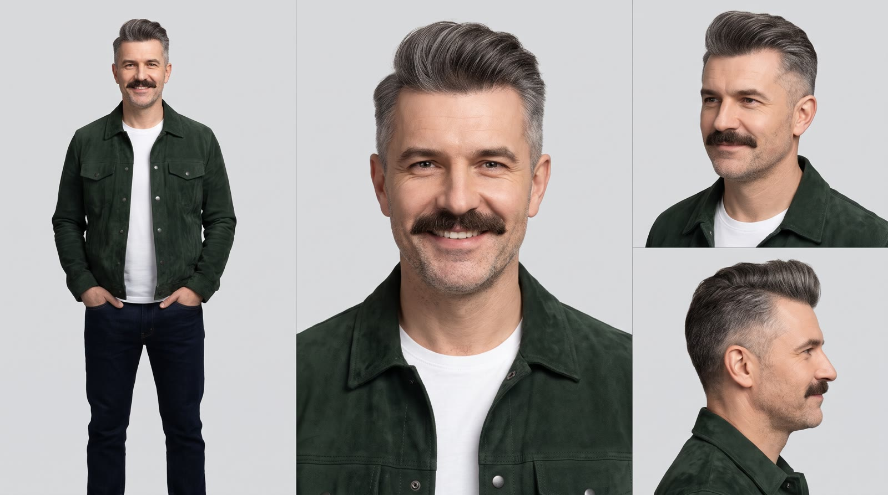

Беру исходное видео с ведущим, ставлю на его место фирменного персонажа и озвучиваю текст живым мужским голосом на русском. Губы двигаются под слова, лицо, усы, причёска и куртка одинаковые во всех кадрах.
Демо на 10 секунд. Исходник взял со стока, персонажа нарисовал сам, потому что вашего листа персонажа у меня пока нет.

Текст: «Привет! Мы в автосалоне, и вот что скажу сразу: новая оптика, фирменная решётка и цена ниже, чем у конкурентов. Сейчас разберёмся, стоит ли брать». Голос из библиотеки ElevenLabs, нативный русский. Персонаж смотрит в камеру, жестикулирует и переминается с ноги на ногу, сцена и ракурс взяты из исходника.